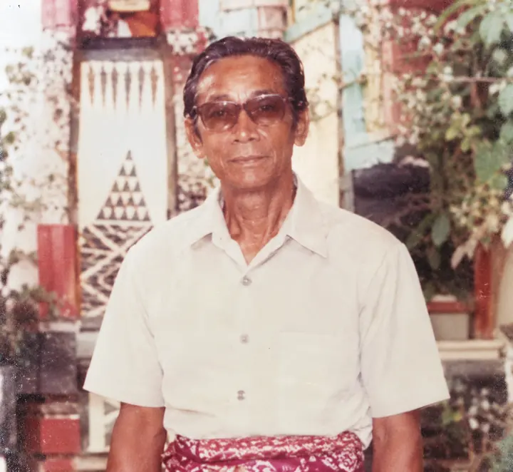

Biografi Tokoh · Arsip Kertha Wisesa
I Nyoman Bedeg
Maha Guru · Generasi Pendiri Kertha Wisesa

Yang sudah terdokumentasi
Dalam prosesi di Padepokan Pusat Kertha Wisesa pada 17 September 2021, I Nyoman Bedeg dan I Made Regog Gunung, yang keduanya telah wafat, dinobatkan sebagai Maha Guru secara anumerta. Penghormatan tersebut dicatat Kabarnusa pada 18 September 2021. Sumber ini tidak membuktikan bahwa gelar tersebut sudah digunakan semasa hidup mereka.
Temuan yang lebih tua memperkuat posisinya. Buku pemerintah Pencak Silat Daerah Bali terbitan 1985 secara independen mencantumkan Nyoman Bedeg di antara tokoh-tokoh awal Kertha Wisesa, bersama Nyoman Lilir, Ketut Ngembon, Made Runtig, Regig, Made Rema, dan nama “Bapak Raka”. Ini membuktikan nama Bedeg sudah tercatat dalam dokumentasi perguruan puluhan tahun sebelum penobatan Maha Guru 2021.
Hubungan keluarga
Menurut keterangan keluarga, I Nyoman Bedeg adalah adik kandung I Made Regog Gunung / Pekak Gunung.